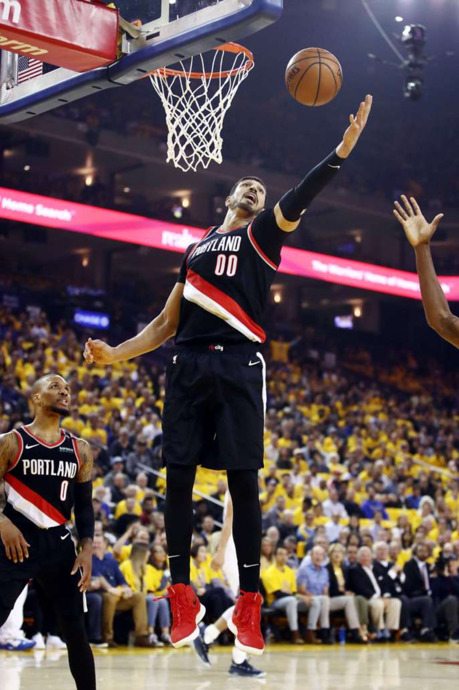

SPORT
NBA : pourquoi la télévision tourque ne diffuse pas les finales de conference Ouest
En raison de la présence dans l’effectif de Portland du Turc Enes Kanter, fervent opposant au président Erdogan, les fans turcs ne verront pas l’affrontement avec les Golden State Warriors.
Persona non grata dans son pays, Enes Kanter dispute les finales de conférence Ouest de la NBA. EZRA SHAW / AFP
Lors de la première rencontre des finales de conférence Ouest, en NBA, mardi 14 mai, le basketteur turc Enes Kanter a été aux premières loges pour voir Stephen Curry prendre feu aux tirs à trois points. En raison de la stratégie défensive de son équipe, les Portland Trail Blazers, le pivot est, à plusieurs reprises, resté planté dans la raquette, laissant le sniper de ses adversaires, les Golden State Warriors, dégainer de loin.
Mais nul n’aura vu le calvaire d’Enes Kanter dans son pays, la rencontre – comme la suite de la série, à compter de jeudi 16 mai – n’ayant pas été retransmise par S Sport, la chaîne câblée turque diffusant la NBA.
La raison ? Le joueur est persona non grata en Turquie. Il est accusé « d’appartenance à une organisation terroriste » par le gouvernement en raison de son soutien au prédicateur Fethullah Gülen, accusé par les autorités turques d’être le cerveau du putsch – raté – de 2016.
Très critique vis-à-vis du président Recep Tayyip Erdogan – il l’a surnommé « le Hitler de notre siècle » –, le basketteur de 26 ans, dont le passeport a été annulé, est sous le coup de d’un mandat d’arrêt pour avoir violé une loi interdisant d’insulter le président.
« Ce n’est pas de notre ressort, mais c’est comme ça »
Enes Kanter n’a pas participé à un match de son équipe délocalisé à Londres en janvier par crainte d’être extradé. Ses résultats ne sont pas traités par les médias turcs et ses matchs ne sont pas diffusés sur les chaînes nationales.
« Je peux clairement affirmer que nous ne diffuserons pas la série Warriors - Blazers, a confirmé à Reuters le commentateur de S Sport, Omer Sarac avant le premier match. Par ailleurs, si Portland se qualifie pour la finale, elle ne sera pas diffusée non plus. Ce n’est pas de notre ressort, mais c’est comme ça. »
« Il n’y a eu aucune pression de la part du gouvernement pour influencer notre grille de diffusion », a atténué un porte-parole de la première chaîne de sport du pays, dans un communiqué, dénonçant une tentative de « certains médias de politiser la grille ».
« Tous les matchs de la finale de conférence Ouest seront disponibles pour les fans en Turquie sur NBA TV [accessible avec un abonnement sur le câble] et en ligne, sur le NBA League Pass », essaie-t-on de tempérer à la NBA, interrogée par Le Monde. Mais aucun, donc, avec des commentaires en turc, ce qui a déclenché l’ire de nombreux fans de NBA dans le pays où le basket est le second sport le plus populaire.
Les finales de conférence Est, entre les Toronto Raptors et les Milwaukee Bucks, sont, elles, bien programmées sur la chaîne turque. Si un joueur turc, Ersan İlyasova, évolue avec la franchise du Wisconsin, il ne se mêle pas de politique.
« Le gouvernement turc a peur d’un joueur NBA »
« Tous ces fans de la NBA aspirent à regarder les finales de la conférence Ouest, mais ils ne peuvent pas tous à cause de moi. C’est à la fois drôle et dingue, [le gouvernement turc] a peur d’un joueur NBA », a commenté Enes Kanter interrogé par le Washington Post.
Au passage, le joueur a rappelé que les télévisions turques n’avaient pas non plus diffusé la finale de conférence Ouest en 2016 entre son équipe des Oklahoma CIty Thunder et les Warriors.
Presque malgré lui, Enes Kanter, qui a dû couper les ponts avec sa famille – elle l’a renié pour éviter les ennuis – se retrouve figure de l’opposition au président turc. « Je ne suis pas un politicien, assure le joueur. Ce n’est pas mon rôle, mais tout le monde a tellement peur d’Erdogan que je dois prendre la parole pour défendre la liberté et les droits de l’homme. »
Après que Kanter s’est plaint – soutenu par l’association des joueurs – que le compte Twitter en turc de la NBA omette volontairement son nom, la ligue nord-américaine a rompu son contrat avec l’entreprise locale chargée de tweeter en son nom.
Mais la ligue marche sur des œufs, dans un pays où le gouvernement n’a pas hésité à poursuivre l’immense star du football Hakan Sükür pour les mêmes raisons que Kanter – il vit en exil en Californie.
Si d’aventure les Blazers de Kanter et les Toronto Raptors atteignent la finale, un nouveau cas de figure se posera pour l’athlète, apatride de facto car privé de passeport. Le sénateur démocrate de l’Oregon, Ron Wyden, a d’ores et déjà écrit au premier ministre canadien, Justin Trudeau, lui demandant de faciliter les démarches pour que le pivot puisse participer aux rencontres disputées sur le sol canadien.
Avant cela, il faudra que les coéquipiers du pivot turc renversent les doubles champions NBA en titre. Avant de disputer la seconde manche de la série (dans la nuit de jeudi à vendredi en France), les Golden State Warriors mènent 1-0 face aux Blazers.
Clément Martel